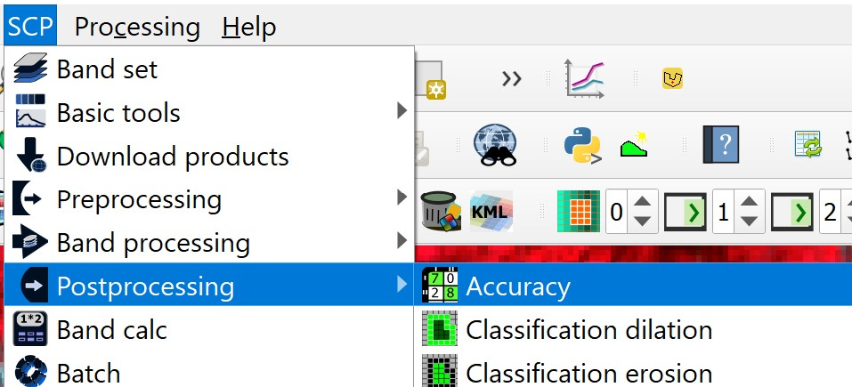

5 Supervised Satellite Image Classification for Urban Land Cover Mapping
5.1 Overview
In this chapter, you will gain hands-on experience on using QGIS and Semi-automatic classification Plugin (SCP) to perform supervised satellite image classification for urban land cover classification. It is a continuation of Chapter 3 and 4.
By the end of this chapter, you will acquire the skills to:
- preparing land cover scheme for supervised classification,
- extracting sub-scene for classification,
- digitising ROIs both for training and testing purposes,
- assessing the spectral signatures of samples,
- creating a classification preview,
- generating the classification output,
- assessing the classification accuracy.
5.2 Selecting the study area
In this hands-on exercise, Sentinel-2 data of Singapore taken on 2020/01/26 (ID: S2A_MSIL1C_20200126T032011_N0208_R118_T48NUG_20200126T061348) will be used. The data can be downloaded from the Copernicus Open Access Hub website by click on this url. You can find a step-by-step guide on how to download data from the Copernicus Open Access Hub in Chapter 3: Acquiring Sentinel-2 Data of this workbook.
For the purpose of this hands-on exercise, a sub-scene of the data as shown in the figure below will be used.
DIY: Using the steps you had learned, extract a study area similar to the screenshot below.
The study area comprises of Choa Chu Kang, Bukit Panjang and Sungei Kadut planning areas. At the east of the study area is the Central Water Catchment whereby Singapore Zoo, River Safari and Night Safari sites can be seen clearly. Notice that the selected area is free of cloud cover which is very idea for image analysis. Otherwise, you have to use a cloud mask.
5.3 Semi-automatic classification Plugin (SCP)
In this hands-on exercise, SCP will be used. If you have yet to install SCP, follow the instruction provided by 4.2 Installing Semi-Automatic Classification Plugin of this workbook to install SCP.
5.4 Supervised Classification
The method of classification that you will attempt in this hands-on exercise is called supervised classification. This is a type of classification in which the analyst trains the system to identify spectral classes based on samples of pixels taken from the image. Adequate samples are to be used for each land cover class. Each class should be spectrally different from one another. Samples are made by creating a polygon in representative pixels from a class, then loading those pixels’ information as a signature. After samples have been taken for each land cover class, their separability is to be assessed by observing the signatures on a figure plotting wavelength vs. reflectance value. Samples may need to be refined based on that outcome. The final product of an image classification is a 1 band raster image with land cover types represented as different classes. Figure below shows a typical process of supervised classification.

5.4.1 Defining the land cover scheme
For the purpose of this study, nine land cover type will be classified, they are:
Water body: sea, coastal water, strait etc
Inland water: lakes, reservoirs, channels, etc.
Bare land: open lands
Natural and semi-natural vegetation
Managed vegetation: grass lands, parks, trees etc
Built-up 1: high-density buildings
Built-up 2: medium density buildings
Built-up 3: low density buildigns
Impervious surfaces:
5.4.2 Creating Colour Composite Images
It is always a best practice to create colour composite images of the study area and use these images to assist you in the the selection and digitising of training and test vector data sets.
DIY: Using the steps you had learned, create the following colour composite images.
5.4.3 Creating a Band set
The next step is to create a band set.
- From the menu bar, select SCP -> Band set.
Band set dialog window appears.
From the Single band list, click on band 2, 3, 4 and 8.
Click on the plus button.
For Wavelength quick setting, Select Sentinel-2 .
Your screen should look similar to the figure below.
As you can see, the layers are seen under Band Set 1 (e.g. Band 2 - Blue (10 m)). Make sure the bands are in the right order and ascending.
- Click on Run button.
5.4.4 Digitsing training samples
All supervised classification methods required prior identification of training samples, also refer to as region of interest (ROI). High quality training data is necessary to get good land cover product results. In the most ideal situation, training data is collected in the field by visiting each of the land cover types to be mapped and collecting attributes. When field collection is not an option, the second best choice is to digitise training data from high resolution colour composite images.
Figure below shows the false colour composite image of the study area and the training samples for the nine land cover types.
In this section, you will learn how to digitise training samples with the help of the colour composite and NDVI images created in the earlier section.
- From the icon bar, click on the icon marks in red.
Notice that SCP & Dock panel is added on the left hand panel of QGIS.
By default, the Home tab is selected.
- Click on the Training input tab.
The panel should look similar to the figure below.
Next, you must create a file where the ROIs can be saved.
- At the SCP & Dock panel, click on the second icon button located at the top level.
The Create SCP training input dialog window open.
- Navigate to the data sub-folder (i.e. RSdata), called the output file
YT_train.
- When you are ready, click on Save button.
Notice that a temporary layer called YT_train has been add onto Layer panel. Also note that Training input layer is YT_train.scp.
Before we start to create ROIs, let us understand two terms use in SCP, namely Classes and Macroclasses. In SCP, each ROI is identified by a Class ID (i.e. C ID), and each ROI is assigned to a land cover class through a Macroclass ID (i.e. MC ID). Macroclasses are composed of several materials having different spectral signatures; in order to achieve good classification results we should separate spectral signatures of different materials, even if belonging to the same macroclass. Thus,we are going to create several ROIs for each macro class (setting the same MCID, but assigning a different C ID to every ROI).
5.4.4.1 Defining training sample by using polygon
The first macroclass we are going to define is water body.
- From the layer, check to display the false colour composite image.
Figure below shows the location of the water body sample site.
With SCP, a training sample be created by either manually drawing a polygon or with an automatic region growing algorithm. In this section, you will learn how to define a training sample by using polygon method.
- From SCP Working toolbar, click on Create a ROI polygon button.
- On the View window, left click water sample site to define the ROI vertices and right click to define the last vertex closing the polygon.
An orange semi-transparent polygon is displayed over the image, which is a temporary polygon (i.e. it is not saved in the Training input).
Once we are satisfy with the site, we can save it to the Training input.
From SCP & Dock panel, click on Training input tab.
In the ROI Signature list set MC ID = 1 and MC Info = Water body; also set C ID = 1 and C Info = Water body.
Your screen should look similar to the figure below.
- Now click on Save temporary ROI to training input button to save the ROI in the Training input.
After a few seconds, the ROI is listed in the ROI Signature list and the spectral signature is calculated (because Signature was checked) as shown in the figure below.
As you can see, the C ID in ROI Signature list is automatically increased by 1. Saved ROI is displayed as a dark polygon in the map and the temporary ROI is removed.
Be warned: The MC ID will not increase automatically. It is important for us to increase the number manually every time a new macroclass is used.
Also, in the ROI Signature list you can notice that the Type is R&S, meaning that the ROI spectral signature was calculated and saved in the Training input.
You can also see in the tab Macroclasses that the first macroclass has been added to the table Macroclasses.
DIY: Using the steps you had learned, define a training sample for Inland water as shown in the figure below.
DIY: Using the steps you had learned, define a training sample for Bare land as shown in the figure below.
DIY: Using the steps you had learned, define a training sample for Natural vegetation as shown in the figure below.
DIY: Using the steps you had learned, define a training sample for Managed vegetation as shown in the figure below.
DIY: Using the steps you had learned, define a training sample for Built-up 1 as shown in the figure below.
DIY: Using the steps you had learned, define a training sample for Built-up 2 as shown in the figure below.
DIY: Using the steps you had learned, define a training sample for Built-up 3 as shown in the figure below.
DIY: Using the steps you had learned, define a training sample for Impervious surfaces as shown in the figure below.
Tip: You can have more than one polygon that represents the same class. In fact, you should typically have many polygons for each class. Many small ROIs are better than a few large ones (a few hundred pixels tops for each ROI). This can help account for the spectral variations in each land cover class. If you provide just one example of forest, it will be hard to recognize the variety of spectral signatures associated with that class. If you have multiple sub-classes under the same class (such as different tree species all being considered forest), your ROIs should reflect the full breadth of possible spectral signatures. You will find that you will need to adjust your training data a number of times (maybe many times!) in order to produce a quality classification. The actual classification part is just pressing a button, what most influences the accuracy of your results is the quality of your training data. Therefore, make sure to take your time when collecting ROIs. The amount of ROIs for each class should be proportional to the total area of that class in the image. If you have more forest than water, then you should have more ROIs for forest than you have for water.
5.4.5 Assessing the Spectral Signatures
Spectral signatures are used by Classification Algorithms for labelling image pixels. Different materials may have similar spectral signatures (especially considering multispectral images) such as built-up and bare land. If spectral signatures used for classification are too similar, pixels could be misclassified because the algorithm is unable to discriminate correctly those signatures. Thus, it is useful to assess the Spectral Distance of signatures to find similar spectral signatures that must be removed. Of course the concept of distance varies according to the algorithm used for classification.
5.4.5.1 Spectral Signature Plot
In SCP, one can simply assess spectral signature similarity by displaying a signature plot.
- In order to display the signature plot, in the ROI Signature list highlight two or more spectral signatures (with click in the table), then click on Spectral Signature Plot button.
The Spectral Signature Plot appears.
In the plot we can see the line of each signature (with the color defined in the ROI & Signature list), and the spectral range (minimum and maximum) of each band (i.e. the semi-transparent area colored like the signature line). The larger is the semi-transparent area of a signature, the higher is the standard deviation, and therefore the heterogeneity of pixels that composed that signature. Spectral similarity between spectral signatures is highlighted in orange in the Plot Signature list.
Figure below shows the Spectral Signature Plot of Natural vegetation and Managed vegetation. The figure reveals that there are significant overlapping of the signature values of Natural vegetation and Managed vegetation land cover classes.
Figure below shows the Spectral Signature Plot of Built-up 1, Built-up 2, Built-up 3 and Impervious surfaces land cover classes.
The figure reveals that there are significant overlapping of the signature values of these four land cover types. As a result, we should consider either by combining some of the highly similar land cover type or by increasing the number of more representative training samples.
5.4.5.2 Spectral Distance
Additionally, we can calculate the spectral distances of signatures (for more information see Spectral Distance).
Highlight two or more spectral signatures with click in the table Plot Signature list, then
At the Spectral signature plot window, click on Calculate spectral distance button located at the right of the panel.
Distances will be calculated for each pair of signatures.
Now let us open the tab Spectral distances.
- From the left of SCP: Spectral signature plot window, click on Spectral distance tab.
Your screen should look similar to the screenshot below.
We can notice that similarity between signatures vary according to considered algorithm. For instance, two signatures can be very similar for Spectral Angle Mapping (very low Spectral Angle), but quite distant for the Maximum Likelihood (Jeffries-Matusita Distance value near 2). The similarity of signatures is affected by the similarity of materials (in relation to the number of spectral bands available); also, the way we create ROIs influences the signatures.
5.4.5.3 Spectral details
Another very useful plot in SCP: Spectral Signature Plot window is Signature details.
- From the left of SCP: Spectral Signature Plot, click on Signature details tab.
Your screen should look similar to the figure below.
Spectral signature values, standard deviation and other details such as the number of ROI pixels are displayed in the Signature details report.
5.4.6 Creating a Classification Preview
The classification process is based on collected ROIs (and spectral signatures thereof). It is useful to create a Classification preview in order to assess the results (influenced by spectral signatures) before the final classification. In case the results are not good, we can collect more ROIs to better classify land cover.
DIY: Before running a classification (or a preview), set the color of land cover classes that will be displayed in the classification raster.
- In the ROI Signature list (page 27), double click the color (in the column Color) of each ROI to choose a representative color of each class. Also, we need to set the color for macroclasses in table Macroclasses.
Now, we are read to perform Classification Preview.
Firstly, we need to select the classification algorithm. In this hands-on exercise we are going to use the Maximum Likelihood algorithm.
- From menu bar, select SCP -> Band Processing -> Classification.
The Classification dialog window appears.
For Use, check MC ID.
For Algorithm, select the Maximum Likelihood from the drop-down list.
Next, return to QGIS window.
- From SCP Toolbar, set the preview size to 200.
Next, click on Activate classification preview pointer icon .
Hover you mouse over Kranji Camp, left-click a point of the image in the map.
The classification process should be very fast, and the result is a classified square centered in clicked point as shown in the screenshot below.

Previews are temporary rasters (deleted after QGIS is closed) placed in a group named Class_temp_group in the QGIS panel Layers.
In general, it is good to perform a classification preview every time a ROI (or a spectral signature) is added to the ROI & Signature list. Therefore, the phases Digitising training samples (or ROIs) and Creating a Classification Preview should be iterative and concurrent processes.
5.4.7 Generating the Classification Output
When we are happy with the classification preview review, it is time for us to perform the actual land cover classification of the whole image.
From the Classificvation window, for Use, make sure that MC ID is checked.
Click on Run button.
The Save classification output dialog window appears.
- Navigate to the data sub-folder of this project, give the output file an appropriate name (i.e. YT_ML). Notice that the output file will be saved in geotif file format.
When the classification process is completed, a sound is played. At the same time, a land cover image called YT_ML will be added into Layers panel and display of view window of QGIS as shown in the figure below.
5.4.8 Assessing the classification accuracy
The last phase of a supervised classification is called classification accuracy assessment. In general, this phase consists of two steps. They are:
Digitise a new layer with ROIs and set again ROIs for the nine classes to have a reference ground. Warning: We cannot use the ROIs we used for the classification because you want to compare the classification with undependable training input.
Perform classification accuracy analysis by using Accuracy function of SCP.
DIY: Using the steps you had learned, digitise a new set of ROIs and name the file YT_test.
Once the YT_test ROI is ready, we will perform the accuracy assessment analysis.
- From the menu bar of QGIS, click on SCP -> Postprocessing -> Accuracy.

The Accuracy assessment dialog window appears.
For Select the classification to assess, select the classified image (i.e. YT_ML) from the drop-down list (Note: It is always a good practice to click on the refresh button located at the end of the selection before clicking on the drop-down list. This is to ensure that the drop-down list provide the latest update.)
For Select the reference vector or raster, select the newly created test samples (i.e. YT_test) from the drop-down list (Note: It is always a good practice to click on the refresh button located at the end of the selection before clicking on the drop-down list. This is to ensure that the drop-down list provide the latest update.)
For Vector field, select MC_ID from the drop-down list.
You screen should look similar to the screenshot below.
- Next, click on Run button.
The Save error matrix raster output dialog window appears.
- Provide the output file a name (i.e. YT_ML).
When you are ready,
- click on Save button.
The Accuracy assessment report appears. It consists of three sub-section.
- The long pair-wise error list.
- Confusion Matrix
- Kappa hat matix
The output will tell you the accuracy for each class and the overall accuracy. The Kappa scale is from 0 to 1, 0 means the classification is not better than random, 1 means the classification is highly accurate. Refer to Lesson 10 slides for a comprehensive discussion of confusion matrix and Kappa statistics.